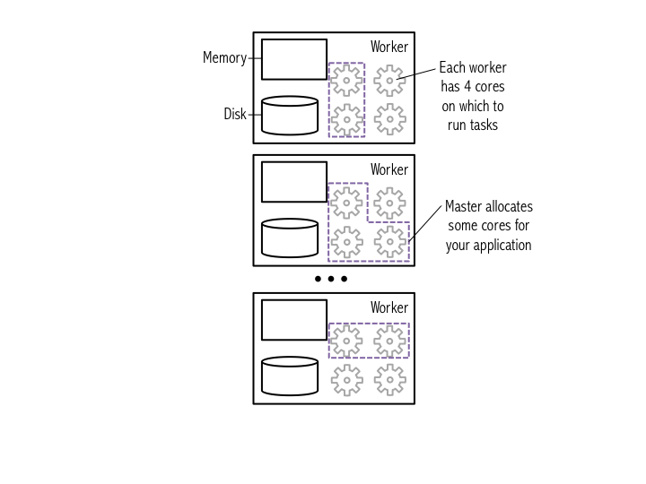
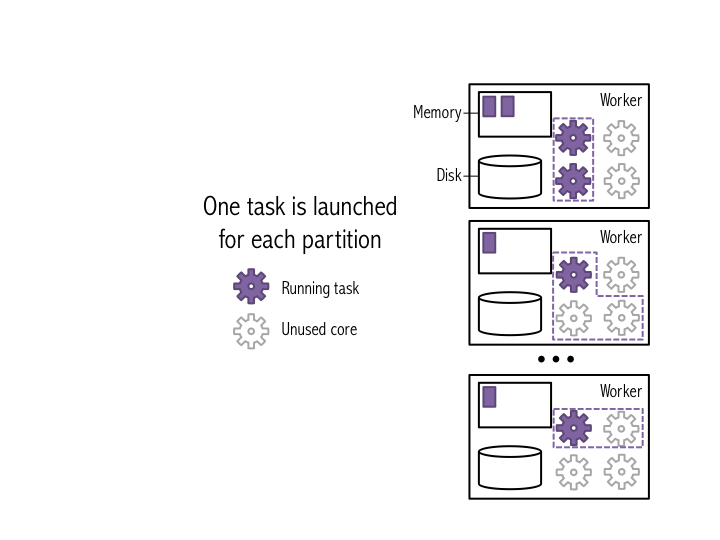
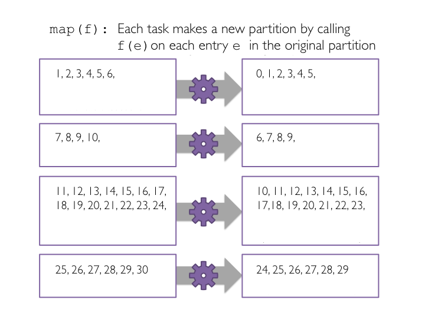
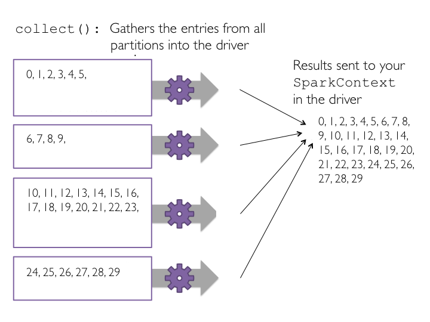
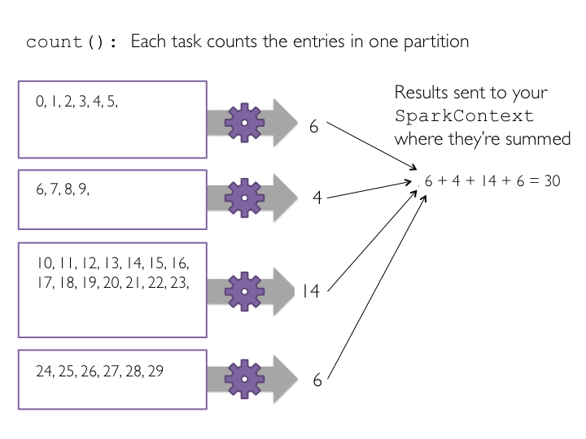
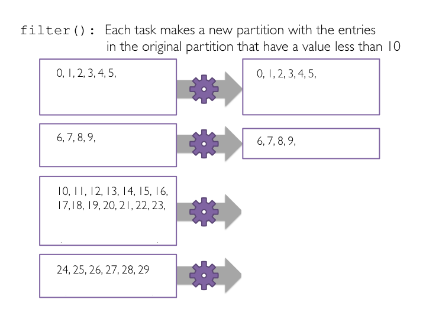

# + # **Spark Tutorial: Learning Apache Spark**#### This tutorial will teach you how to use [Apache Spark](http://spark.apache.org/), a framework for large-scale data processing, within a notebook. Many traditional frameworks were designed to be run on a single computer. However, many datasets today are too large to be stored on a single computer, and even when a dataset can be stored on one computer (such as the datasets in this tutorial), the dataset can often be processed much more quickly using multiple computers. Spark has efficient implementations of a number of transformations and actions that can be composed together to perform data processing and analysis. Spark excels at distributing these operations across a cluster while abstracting away many of the underlying implementation details. Spark has been designed with a focus on scalability and efficiency. With Spark you can begin developing your solution on your laptop, using a small dataset, and then use that same code to process terabytes or even petabytes across a distributed cluster.#### **During this tutorial we will cover:**#### *Part 1:* Basic notebook usage and [Python](https://docs.python.org/2/) integration#### *Part 2:* An introduction to using [Apache Spark](https://spark.apache.org/) with the Python [pySpark API](https://spark.apache.org/docs/latest/api/python/pyspark.html#pyspark.RDD) running in the browser#### *Part 3:* Using RDDs and chaining together transformations and actions#### *Part 4:* Lambda functions#### *Part 5:* Additional RDD actions#### *Part 6:* Additional RDD transformations#### *Part 7:* Caching RDDs and storage options#### *Part 8:* Debugging Spark applications and lazy evaluation#### The following transformations will be covered:* #### `map()`, `mapPartitions()`, `mapPartitionsWithIndex()`, `filter()`, `flatMap()`, `reduceByKey()`, `groupByKey()`#### The following actions will be covered:* #### `first()`, `take()`, `takeSample()`, `takeOrdered()`, `collect()`, `count()`, `countByValue()`, `reduce()`, `top()`#### Also covered:* #### `cache()`, `unpersist()`, `id()`, `setName()`#### Note that, for reference, you can look up the details of these methods in [Spark's Python API](https://spark.apache.org/docs/latest/api/python/pyspark.html#pyspark.RDD)map(), mapPartitions(), mapPartitionsWithIndex(), filter(), flatMap(), reduceByKey(), groupByKey()first(), take(), takeSample(), takeOrdered(), collect(), count(), countByValue(), reduce(), top()cache(), unpersist(), id(), setName()### **Part 1: Basic notebook usage and [Python](https://docs.python.org/2/) integration **#### **(1a) Notebook usage**#### A notebook is comprised of a linear sequence of cells. These cells can contain either markdown or code, but we won't mix both in one cell. When a markdown cell is executed it renders formatted text, images, and links just like HTML in a normal webpage. The text you are reading right now is part of a markdown cell. Python code cells allow you to execute arbitrary Python commands just like in any Python shell. Place your cursor inside the cell below, and press "Shift" + "Enter" to execute the code and advance to the next cell. You can also press "Ctrl" + "Enter" to execute the code and remain in the cell. These commands work the same in both markdown and code cells.# This is a Python cell. You can run normal Python code here...print 'The sum of 1 and 2 is {0}'.format(1+2)# Here is another Python cell, this time with a variable (x) declaration and an if statement:x = 42if x > 40: print ('The sum of 1 and 3 is {0}'.format(1+3))#### **(1b) Notebook state**#### As you work through a notebook it is important that you run all of the code cells. The notebook is stateful, which means that variables and their values are retained until the notebook is detached (in Databricks Cloud) or the kernel is restarted (in IPython notebooks). If you do not run all of the code cells as you proceed through the notebook, your variables will not be properly initialized and later code might fail. You will also need to rerun any cells that you have modified in order for the changes to be available to other cells.#from __future__ import print_function #python3 print# This cell relies on x being defined already.# If we didn't run the cells from part (1a) this code would fail.print x * 2print("x=",x)#### **(1c) Library imports**#### We can import standard Python libraries ([modules](https://docs.python.org/2/tutorial/modules.html)) the usual way. An `import` statement will import the specified module. In this tutorial and future labs, we will provide any imports that are necessary.import statement will import the specified module. In this tutorial and future labs, we will provide any imports that are necessary.# Import the regular expression libraryimport rem = re.search('(?<=abc)def', 'abcdef')m.group(0)# Import the datetime libraryimport datetimeprint ('This was last run on: {0}'.format(datetime.datetime.now()))### **Part 2: An introduction to using [Apache Spark](https://spark.apache.org/) with the Python [pySpark API](https://spark.apache.org/docs/latest/api/python/pyspark.html#pyspark.RDD) running in the browser**#### **Spark Context**#### In Spark, communication occurs between a driver and executors. The driver has Spark jobs that it needs to run and these jobs are split into tasks that are submitted to the executors for completion. The results from these tasks are delivered back to the driver.#### In part 1, we saw that normal python code can be executed via cells. When using Databricks Cloud this code gets executed in the Spark driver's Java Virtual Machine (JVM) and not in an executor's JVM, and when using an IPython notebook it is executed within the kernel associated with the notebook. Since no Spark functionality is actually being used, no tasks are launched on the executors.#### In order to use Spark and its API we will need to use a `SparkContext`. When running Spark, you start a new Spark application by creating a [SparkContext](http://spark.apache.org/docs/latest/api/python/pyspark.html#pyspark.SparkContext). When the `SparkContext` is created, it asks the master for some cores to use to do work. The master sets these cores aside just for you; they won't be used for other applications. When using Databricks Cloud or the virtual machine provisioned for this class, the `SparkContext` is created for you automatically as `sc`.SparkContext. When running Spark, you start a new Spark application by creating a SparkContext. When the SparkContext
is created, it asks the master for some cores to use to do work. The
master sets these cores aside just for you; they won't be used for other
applications. When using Databricks Cloud or the virtual machine
provisioned for this class, the SparkContext is created for you automatically as sc.#### **(2a) Example Cluster**#### The diagram below shows an example cluster, where the cores allocated for an application are outlined in purple.#### You can view the details of your Spark application in the Spark web UI. The web UI is accessible in Databricks cloud by going to "Clusters" and then clicking on the "View Spark UI" link for your cluster. When running locally you'll find it at [localhost:4040](http://localhost:4040). In the web UI, under the "Jobs" tab, you can see a list of jobs that have been scheduled or run. It's likely there isn't any thing interesting here yet because we haven't run any jobs, but we'll return to this page later.#### At a high level, every Spark application consists of a driver program that launches various parallel operations on executor Java Virtual Machines (JVMs) running either in a cluster or locally on the same machine. In Databricks Cloud, "Databricks Shell" is the driver program. When running locally, "PySparkShell" is the driver program. In all cases, this driver program contains the main loop for the program and creates distributed datasets on the cluster, then applies operations (transformations & actions) to those datasets.#### Driver programs access Spark through a SparkContext object, which represents a connection to a computing cluster. A Spark context object (`sc`) is the main entry point for Spark functionality. A Spark context can be used to create Resilient Distributed Datasets (RDDs) on a cluster.#### Try printing out `sc` to see its type.
sc)
is the main entry point for Spark functionality. A Spark context can be
used to create Resilient Distributed Datasets (RDDs) on a cluster.sc to see its type.# Display the type of the Spark Context sctype(sc)#### **(2b) `SparkContext` attributes**#### You can use Python's [dir()](https://docs.python.org/2/library/functions.html?highlight=dir#dir) function to get a list of all the attributes (including methods) accessible through the `sc` object.SparkContext attributessc object.# List sc's attributes#dir(sc)#### **(2c) Getting help**#### Alternatively, you can use Python's [help()](https://docs.python.org/2/library/functions.html?highlight=help#help) function to get an easier to read list of all the attributes, including examples, that the `sc` object has.sc object has.# Use help to obtain more detailed information#help(sc)# After reading the help we've decided we want to use sc.version to see what version of Spark we are runningsc.version# Help can be used on any Python object#help(map)#### **Working with your first RDD**#### In Spark, we first create a base [Resilient Distributed Dataset](http://spark.apache.org/docs/latest/api/python/pyspark.html#pyspark.RDD) (RDD). We can then apply one or more transformations to that base RDD. *An RDD is immutable, so once it is created, it cannot be changed.* As a result, each transformation creates a new RDD. Finally, we can apply one or more actions to the RDDs. Note that Spark uses lazy evaluation, so transformations are not actually executed until an action occurs.#### We will perform several exercises to obtain a better understanding of RDDs:* ##### Create a Python collection of 10,000 integers* ##### Create a Spark base RDD from that collection* ##### Subtract one from each value using `map`* ##### Perform action `collect` to view results* ##### Perform action `count` to view counts* ##### Apply transformation `filter` and view results with `collect`* ##### Learn about lambda functions* ##### Explore how lazy evaluation works and the debugging challenges that it introducesmapcollect to view resultscount to view countsfilter and view results with collect#### **(3a) Create a Python collection of integers in the range of 1 .. 10000**#### We will use the [xrange()](https://docs.python.org/2/library/functions.html?highlight=xrange#xrange) function to create a [list()](https://docs.python.org/2/library/functions.html?highlight=list#list) of integers. `xrange()` only generates values as they are needed. This is different from the behavior of [range()](https://docs.python.org/2/library/functions.html?highlight=range#range) which generates the complete list upon execution. Because of this `xrange()` is more memory efficient than `range()`, especially for large ranges.xrange() only generates values as they are needed. This is different from the behavior of range() which generates the complete list upon execution. Because of this xrange() is more memory efficient than range(), especially for large ranges.data = xrange(1, 10001) # data = range(1, 10001) # python3# Data is just a normal Python list# Obtain data's first elementdata[0]# We can check the size of the list using the len() functionlen(data)#### **(3b) Distributed data and using a collection to create an RDD**#### In Spark, datasets are represented as a list of entries, where the list is broken up into many different partitions that are each stored on a different machine. Each partition holds a unique subset of the entries in the list. Spark calls datasets that it stores "Resilient Distributed Datasets" (RDDs).#### One of the defining features of Spark, compared to other data analytics frameworks (e.g., Hadoop), is that it stores data in memory rather than on disk. This allows Spark applications to run much more quickly, because they are not slowed down by needing to read data from disk.#### The figure below illustrates how Spark breaks a list of data entries into partitions that are each stored in memory on a worker.#### To create the RDD, we use `sc.parallelize()`, which tells Spark to create a new set of input data based on data that is passed in. In this example, we will provide an `xrange`. The second argument to the [sc.parallelize()](http://spark.apache.org/docs/latest/api/python/pyspark.html#pyspark.SparkContext.parallelize) method tells Spark how many partitions to break the data into when it stores the data in memory (we'll talk more about this later in this tutorial). Note that for better performance when using `parallelize`, `xrange()` is recommended if the input represents a range. This is the reason why we used `xrange()` in 3a.#### There are many different types of RDDs. The base class for RDDs is [pyspark.RDD](http://spark.apache.org/docs/latest/api/python/pyspark.html#pyspark.RDD) and other RDDs subclass `pyspark.RDD`. Since the other RDD types inherit from `pyspark.RDD` they have the same APIs and are functionally identical. We'll see that `sc.parallelize()` generates a `pyspark.rdd.PipelinedRDD` when its input is an `xrange`, and a `pyspark.RDD` when its input is a `range`.#### After we generate RDDs, we can view them in the "Storage" tab of the web UI. You'll notice that new datasets are not listed until Spark needs to return a result due to an action being executed. This feature of Spark is called "lazy evaluation". This allows Spark to avoid performing unnecessary calculations.
sc.parallelize(), which tells Spark to create a new set of input data based on data that is passed in. In this example, we will provide an xrange. The second argument to the sc.parallelize()
method tells Spark how many partitions to break the data into when it
stores the data in memory (we'll talk more about this later in this
tutorial). Note that for better performance when using parallelize, xrange() is recommended if the input represents a range. This is the reason why we used xrange() in 3a.pyspark.RDD. Since the other RDD types inherit from pyspark.RDD they have the same APIs and are functionally identical. We'll see that sc.parallelize() generates a pyspark.rdd.PipelinedRDD when its input is an xrange, and a pyspark.RDD when its input is a range.x
# Parallelize data using 8 partitions# This operation is a transformation of data into an RDD# Spark uses lazy evaluation, so no Spark jobs are run at this pointxrangeRDD = sc.parallelize(data, 8)# Let's view help on parallelizehelp(sc.parallelize)x
# Let's see what type sc.parallelize() returnedprint 'type of xrangeRDD: {0}'.format(type(xrangeRDD))# How about if we use a rangedataRange = range(1, 10001)rangeRDD = sc.parallelize(dataRange, 8)print 'type of dataRangeRDD: {0}'.format(type(rangeRDD))x
# Each RDD gets a unique IDprint 'xrangeRDD id: {0}'.format(xrangeRDD.id())print 'rangeRDD id: {0}'.format(rangeRDD.id())x
extra_rdd = sc.parallelize(xrange(100), 6)extra_rdd.setName("Extra xrange RDD")print "extra_rdd info: id ({0}), name ({1})".format(extra_rdd.id(), extra_rdd.name())x
# We can name each newly created RDD using the setName() methodxrangeRDD.setName('My first RDD')print "xrangeRDD info: id ({0}), name ({1})".format(xrangeRDD.id(), xrangeRDD.name())x
# Let's view the lineage (the set of transformations) of the RDD using toDebugString()print xrangeRDD.toDebugString()# Let's use help to see what methods we can call on this RDD# help(xrangeRDD)x
# Let's see how many partitions the RDD will be split into by using the getNumPartitions()xrangeRDD.getNumPartitions()#### **(3c): Subtract one from each value using `map`**#### So far, we've created a distributed dataset that is split into many partitions, where each partition is stored on a single machine in our cluster. Let's look at what happens when we do a basic operation on the dataset. Many useful data analysis operations can be specified as "do something to each item in the dataset". These data-parallel operations are convenient because each item in the dataset can be processed individually: the operation on one entry doesn't effect the operations on any of the other entries. Therefore, Spark can parallelize the operation.#### `map(f)`, the most common Spark transformation, is one such example: it applies a function `f` to each item in the dataset, and outputs the resulting dataset. When you run `map()` on a dataset, a single *stage* of tasks is launched. A *stage* is a group of tasks that all perform the same computation, but on different input data. One task is launched for each partitition, as shown in the example below. A task is a unit of execution that runs on a single machine. When we run `map(f)` within a partition, a new *task* applies `f` to all of the entries in a particular partition, and outputs a new partition. In this example figure, the dataset is broken into four partitions, so four `map()` tasks are launched.#### The figure below shows how this would work on the smaller data set from the earlier figures. Note that one task is launched for each partition.#### When applying the `map()` transformation, each item in the parent RDD will map to one element in the new RDD. So, if the parent RDD has twenty elements, the new RDD will also have twenty items.#### Now we will use `map()` to subtract one from each value in the base RDD we just created. First, we define a Python function called `sub()` that will subtract one from the input integer. Second, we will pass each item in the base RDD into a `map()` transformation that applies the `sub()` function to each element. And finally, we print out the RDD transformation hierarchy using `toDebugString()`.mapmap(f), the most common Spark transformation, is one such example: it applies a function f to each item in the dataset, and outputs the resulting dataset. When you run map() on a dataset, a single stage of tasks is launched. A stage
is a group of tasks that all perform the same computation, but on
different input data. One task is launched for each partitition, as
shown in the example below. A task is a unit of execution that runs on a
single machine. When we run map(f) within a partition, a new task applies f
to all of the entries in a particular partition, and outputs a new
partition. In this example figure, the dataset is broken into four
partitions, so four map() tasks are launched.

map()
transformation, each item in the parent RDD will map to one element in
the new RDD. So, if the parent RDD has twenty elements, the new RDD will
also have twenty items.map() to subtract one from each value in the base RDD we just created. First, we define a Python function called sub() that will subtract one from the input integer. Second, we will pass each item in the base RDD into a map() transformation that applies the sub() function to each element. And finally, we print out the RDD transformation hierarchy using toDebugString().xxxxxxxxxx# Create sub function to subtract 1def sub(value): """"Subtracts one from `value`. Args: value (int): A number. Returns: int: `value` minus one. """ return (value - 1)# Transform xrangeRDD through map transformation using sub function# Because map is a transformation and Spark uses lazy evaluation, no jobs, stages,# or tasks will be launched when we run this code.subRDD = xrangeRDD.map(sub)# Let's see the RDD transformation hierarchyprint subRDD.toDebugString()#### ** (3d) Perform action `collect` to view results **#### To see a list of elements decremented by one, we need to create a new list on the driver from the the data distributed in the executor nodes. To do this we call the `collect()` method on our RDD. `collect()` is often used after a filter or other operation to ensure that we are only returning a *small* amount of data to the driver. This is done because the data returned to the driver must fit into the driver's available memory. If not, the driver will crash.#### The `collect()` method is the first action operation that we have encountered. Action operations cause Spark to perform the (lazy) transformation operations that are required to compute the RDD returned by the action. In our example, this means that tasks will now be launched to perform the `parallelize`, `map`, and `collect` operations.#### In this example, the dataset is broken into four partitions, so four `collect()` tasks are launched. Each task collects the entries in its partition and sends the result to the SparkContext, which creates a list of the values, as shown in the figure below.#### The above figures showed what would happen if we ran `collect()` on a small example dataset with just four partitions.#### Now let's run `collect()` on `subRDD`.collect to view results collect() method on our RDD. collect() is often used after a filter or other operation to ensure that we are only returning a small
amount of data to the driver. This is done because the data returned
to the driver must fit into the driver's available memory. If not, the
driver will crash.collect()
method is the first action operation that we have encountered. Action
operations cause Spark to perform the (lazy) transformation operations
that are required to compute the RDD returned by the action. In our
example, this means that tasks will now be launched to perform the parallelize, map, and collect operations.collect()
tasks are launched. Each task collects the entries in its partition and
sends the result to the SparkContext, which creates a list of the
values, as shown in the figure below.
collect() on a small example dataset with just four partitions.collect() on subRDD.# Let's collect the data# print subRDD.collect()collectRDD = subRDD.collect()type(collectRDD)x
# using a lambda function instead of create sub()sub_rdd2 = xrangeRDD.map(lambda x: x-1)collect_rdd2_list = sub_rdd2.collect()type(collect_rdd2_list)#### ** (3d) Perform action `count` to view counts **#### One of the most basic jobs that we can run is the `count()` job which will count the number of elements in an RDD using the `count()` action. Since `map()` creates a new RDD with the same number of elements as the starting RDD, we expect that applying `count()` to each RDD will return the same result.#### Note that because `count()` is an action operation, if we had not already performed an action with `collect()`, then Spark would now perform the transformation operations when we executed `count()`.#### Each task counts the entries in its partition and sends the result to your SparkContext, which adds up all of the counts. The figure below shows what would happen if we ran `count()` on a small example dataset with just four partitions.count to view counts count() job which will count the number of elements in an RDD using the count() action. Since map() creates a new RDD with the same number of elements as the starting RDD, we expect that applying count() to each RDD will return the same result.count() is an action operation, if we had not already performed an action with collect(), then Spark would now perform the transformation operations when we executed count().count() on a small example dataset with just four partitions.
x
print xrangeRDD.count()print subRDD.count()print sub_rdd2.count()#### ** (3e) Apply transformation `filter` and view results with `collect` **#### Next, we'll create a new RDD that only contains the values less than ten by using the `filter(f)` data-parallel operation. The `filter(f)` method is a transformation operation that creates a new RDD from the input RDD by applying filter function `f` to each item in the parent RDD and only passing those elements where the filter function returns `True`. Elements that do not return `True` will be dropped. Like `map()`, filter can be applied individually to each entry in the dataset, so is easily parallelized using Spark.#### The figure below shows how this would work on the small four-partition dataset.#### To filter this dataset, we'll define a function called `ten()`, which returns `True` if the input is less than 10 and `False` otherwise. This function will be passed to the `filter()` transformation as the filter function `f`.#### To view the filtered list of elements less than ten, we need to create a new list on the driver from the distributed data on the executor nodes. We use the `collect()` method to return a list that contains all of the elements in this filtered RDD to the driver program.filter and view results with collect filter(f) data-parallel operation. The filter(f) method is a transformation operation that creates a new RDD from the input RDD by applying filter function f to each item in the parent RDD and only passing those elements where the filter function returns True. Elements that do not return True will be dropped. Like map(), filter can be applied individually to each entry in the dataset, so is easily parallelized using Spark.
ten(), which returns True if the input is less than 10 and False otherwise. This function will be passed to the filter() transformation as the filter function f.collect() method to return a list that contains all of the elements in this filtered RDD to the driver program.# Define a function to filter a single valuedef ten(value): """Return whether value is below ten. Args: value (int): A number. Returns: bool: Whether `value` is less than ten. """ if (value < 10): return True else: return False# The ten function could also be written concisely as: def ten(value): return value < 10# Pass the function ten to the filter transformation# Filter is a transformation so no tasks are runfilteredRDD = subRDD.filter(ten)# View the results using collect()# Collect is an action and triggers the filter transformation to runprint filteredRDD.collect()#### ** (4a) Using Python `lambda()` functions **#### Python supports the use of small one-line anonymous functions that are not bound to a name at runtime. Borrowed from LISP, these `lambda` functions can be used wherever function objects are required. They are syntactically restricted to a single expression. Remember that `lambda` functions are a matter of style and using them is never required - semantically, they are just syntactic sugar for a normal function definition. You can always define a separate normal function instead, but using a `lambda()` function is an equivalent and more compact form of coding. Ideally you should consider using `lambda` functions where you want to encapsulate non-reusable code without littering your code with one-line functions.#### Here, instead of defining a separate function for the `filter()` transformation, we will use an inline `lambda()` function.lambda() functions lambda
functions can be used wherever function objects are required. They are
syntactically restricted to a single expression. Remember that lambda
functions are a matter of style and using them is never required -
semantically, they are just syntactic sugar for a normal function
definition. You can always define a separate normal function instead,
but using a lambda() function is an equivalent and more compact form of coding. Ideally you should consider using lambda functions where you want to encapsulate non-reusable code without littering your code with one-line functions.filter() transformation, we will use an inline lambda() function.lambdaRDD = subRDD.filter(lambda x: x < 10)lambdaRDD.collect()xxxxxxxxxx# Let's collect the even values less than 10evenRDD = lambdaRDD.filter(lambda x: x % 2 == 0)evenRDD.collect()sub_rdd2.filter(lambda x: x<100 and x > 80).collect()#### ** (5a) Other common actions **#### Let's investigate the additional actions: [first()](http://spark.apache.org/docs/latest/api/python/pyspark.html#pyspark.RDD.first), [take()](http://spark.apache.org/docs/latest/api/python/pyspark.html#pyspark.RDD.take), [top()](http://spark.apache.org/docs/latest/api/python/pyspark.html#pyspark.RDD.top), [takeOrdered()](http://spark.apache.org/docs/latest/api/python/pyspark.html#pyspark.RDD.takeOrdered), and [reduce()](http://spark.apache.org/docs/latest/api/python/pyspark.html#pyspark.RDD.reduce)#### One useful thing to do when we have a new dataset is to look at the first few entries to obtain a rough idea of what information is available. In Spark, we can do that using the `first()`, `take()`, `top()`, and `takeOrdered()` actions. Note that for the `first()` and `take()` actions, the elements that are returned depend on how the RDD is *partitioned*.#### Instead of using the `collect()` action, we can use the `take(n)` action to return the first n elements of the RDD. The `first()` action returns the first element of an RDD, and is equivalent to `take(1)`.#### The `takeOrdered()` action returns the first n elements of the RDD, using either their natural order or a custom comparator. The key advantage of using `takeOrdered()` instead of `first()` or `take()` is that `takeOrdered()` returns a deterministic result, while the other two actions may return differing results, depending on the number of partions or execution environment. `takeOrdered()` returns the list sorted in *ascending order*. The `top()` action is similar to `takeOrdered()` except that it returns the list in *descending order.*#### The `reduce()` action reduces the elements of a RDD to a single value by applying a function that takes two parameters and returns a single value. The function should be commutative and associative, as `reduce()` is applied at the partition level and then again to aggregate results from partitions. If these rules don't hold, the results from `reduce()` will be inconsistent. Reducing locally at partitions makes `reduce()` very efficient.first(), take(), top(), and takeOrdered() actions. Note that for the first() and take() actions, the elements that are returned depend on how the RDD is partitioned.collect() action, we can use the take(n) action to return the first n elements of the RDD. The first() action returns the first element of an RDD, and is equivalent to take(1).takeOrdered()
action returns the first n elements of the RDD, using either their
natural order or a custom comparator. The key advantage of using takeOrdered() instead of first() or take() is that takeOrdered()
returns a deterministic result, while the other two actions may return
differing results, depending on the number of partions or execution
environment. takeOrdered() returns the list sorted in ascending order. The top() action is similar to takeOrdered() except that it returns the list in descending order.reduce()
action reduces the elements of a RDD to a single value by applying a
function that takes two parameters and returns a single value. The
function should be commutative and associative, as reduce()
is applied at the partition level and then again to aggregate results
from partitions. If these rules don't hold, the results from reduce() will be inconsistent. Reducing locally at partitions makes reduce() very efficient.# Let's get the first elementprint filteredRDD.first()# The first 4print filteredRDD.take(4)# Note that it is ok to take more elements than the RDD hasprint filteredRDD.take(12)# Retrieve the three smallest elementsprint filteredRDD.takeOrdered(3)# Retrieve the five largest elementsprint filteredRDD.top(5)# Pass a lambda function to takeOrdered to reverse the orderfilteredRDD.takeOrdered(4, lambda s: -s)# Obtain Python's add functionfrom operator import add# Efficiently sum the RDD using reduceprint filteredRDD.reduce(add)# Sum using reduce with a lambda functionprint filteredRDD.reduce(lambda a, b: a + b)# Note that subtraction is not both associative and commutativeprint filteredRDD.reduce(lambda a, b: a - b)print filteredRDD.repartition(4).reduce(lambda a, b: a - b)# While addition isprint filteredRDD.repartition(4).reduce(lambda a, b: a + b)#### ** (5b) Advanced actions **#### Here are two additional actions that are useful for retrieving information from an RDD: [takeSample()](http://spark.apache.org/docs/latest/api/python/pyspark.html#pyspark.RDD.takeSample) and [countByValue()](http://spark.apache.org/docs/latest/api/python/pyspark.html#pyspark.RDD.countByValue)#### The `takeSample()` action returns an array with a random sample of elements from the dataset. It takes in a `withReplacement` argument, which specifies whether it is okay to randomly pick the same item multiple times from the parent RDD (so when `withReplacement=True`, you can get the same item back multiple times). It also takes an optional `seed` parameter that allows you to specify a seed value for the random number generator, so that reproducible results can be obtained.#### The `countByValue()` action returns the count of each unique value in the RDD as a dictionary that maps values to counts.takeSample() action returns an array with a random sample of elements from the dataset. It takes in a withReplacement argument, which specifies whether it is okay to randomly pick the same item multiple times from the parent RDD (so when withReplacement=True, you can get the same item back multiple times). It also takes an optional seed
parameter that allows you to specify a seed value for the random number
generator, so that reproducible results can be obtained.countByValue() action returns the count of each unique value in the RDD as a dictionary that maps values to counts.# takeSample reusing elementsprint filteredRDD.takeSample(withReplacement=True, num=6)# takeSample without reuseprint filteredRDD.takeSample(withReplacement=False, num=6)print filteredRDD.takeSample(withReplacement=False, num=17)# Set seed for predictabilityprint filteredRDD.takeSample(withReplacement=False, num=6, seed=500)# Try reruning this cell and the cell above -- the results from this cell will remain constant# Use ctrl-enter to run without moving to the next cell# Create new base RDD to show countByValuerepetitiveRDD = sc.parallelize([1, 2, 3, 1, 2, 3, 1, 2, 1, 2, 3, 3, 3, 4, 5, 4, 6])print repetitiveRDD.countByValue()#### ** (6a) `flatMap` **#### When performing a `map()` transformation using a function, sometimes the function will return more (or less) than one element. We would like the newly created RDD to consist of the elements outputted by the function. Simply applying a `map()` transformation would yield a new RDD made up of iterators. Each iterator could have zero or more elements. Instead, we often want an RDD consisting of the values contained in those iterators. The solution is to use a [flatMap()](http://spark.apache.org/docs/latest/api/python/pyspark.html#pyspark.RDD.flatMap) transformation, `flatMap()` is similar to `map()`, except that with `flatMap()` each input item can be mapped to zero or more output elements.#### To demonstrate `flatMap()`, we will first emit a word along with its plural, and then a range that grows in length with each subsequent operation.flatMap map()
transformation using a function, sometimes the function will return
more (or less) than one element. We would like the newly created RDD to
consist of the elements outputted by the function. Simply applying a map()
transformation would yield a new RDD made up of iterators. Each
iterator could have zero or more elements. Instead, we often want an
RDD consisting of the values contained in those iterators. The solution
is to use a flatMap() transformation, flatMap() is similar to map(), except that with flatMap() each input item can be mapped to zero or more output elements.flatMap(), we will first emit a word along with its plural, and then a range that grows in length with each subsequent operation.x
# Let's create a new base RDD to work fromwordsList = ['cat', 'elephant', 'rat', 'rat', 'cat']wordsRDD = sc.parallelize(wordsList, 4)# Use mapsingularAndPluralWordsRDDMap = wordsRDD.map(lambda x: (x, x + 's'))# Use flatMapsingularAndPluralWordsRDD = wordsRDD.flatMap(lambda x: (x, x + 's'))# View the resultsprint singularAndPluralWordsRDDMap.collect()print singularAndPluralWordsRDD.collect()# View the number of elements in the RDDprint singularAndPluralWordsRDDMap.count()print singularAndPluralWordsRDD.count()x
simpleRDD = sc.parallelize([2, 3, 4])print simpleRDD.map(lambda x: range(1, x)).collect()print simpleRDD.flatMap(lambda x: range(1, x)).collect()simple_rdd_2 = sc.parallelize([1, 2, 3, 2])print simple_rdd_2.map(lambda x: [x, x+5]).collect()print simple_rdd_2.flatMap(lambda x: [x, x+5]).collect()#### ** (6b) `groupByKey` and `reduceByKey` **#### Let's investigate the additional transformations: [groupByKey()](http://spark.apache.org/docs/latest/api/python/pyspark.html#pyspark.RDD.groupByKey) and [reduceByKey()](http://spark.apache.org/docs/latest/api/python/pyspark.html#pyspark.RDD.reduceByKey).#### Both of these transformations operate on pair RDDs. A pair RDD is an RDD where each element is a pair tuple (key, value). For example, `sc.parallelize([('a', 1), ('a', 2), ('b', 1)])` would create a pair RDD where the keys are 'a', 'a', 'b' and the values are 1, 2, 1.#### The `reduceByKey()` transformation gathers together pairs that have the same key and applies a function to two associated values at a time. `reduceByKey()` operates by applying the function first within each partition on a per-key basis and then across the partitions.#### While both the `groupByKey()` and `reduceByKey()` transformations can often be used to solve the same problem and will produce the same answer, the `reduceByKey()` transformation works much better for large distributed datasets. This is because Spark knows it can combine output with a common key on each partition *before* shuffling (redistributing) the data across nodes. Only use `groupByKey()` if the operation would not benefit from reducing the data before the shuffle occurs.#### Look at the diagram below to understand how `reduceByKey` works. Notice how pairs on the same machine with the same key are combined (by using the lamdba function passed into reduceByKey) before the data is shuffled. Then the lamdba function is called again to reduce all the values from each partition to produce one final result.#### On the other hand, when using the `groupByKey()` transformation - all the key-value pairs are shuffled around, causing a lot of unnecessary data to being transferred over the network.#### To determine which machine to shuffle a pair to, Spark calls a partitioning function on the key of the pair. Spark spills data to disk when there is more data shuffled onto a single executor machine than can fit in memory. However, it flushes out the data to disk one key at a time, so if a single key has more key-value pairs than can fit in memory an out of memory exception occurs. This will be more gracefully handled in a later release of Spark so that the job can still proceed, but should still be avoided. When Spark needs to spill to disk, performance is severely impacted.#### As your dataset grows, the difference in the amount of data that needs to be shuffled, between the `reduceByKey()` and `groupByKey()` transformations, becomes increasingly exaggerated.#### Here are more transformations to prefer over `groupByKey()`: + #### [combineByKey()](http://spark.apache.org/docs/latest/api/python/pyspark.html#pyspark.RDD.combineByKey) can be used when you are combining elements but your return type differs from your input value type. + #### [foldByKey()](http://spark.apache.org/docs/latest/api/python/pyspark.html#pyspark.RDD.foldByKey) merges the values for each key using an associative function and a neutral "zero value".#### Now let's go through a simple `groupByKey()` and `reduceByKey()` example.groupByKey and reduceByKey sc.parallelize([('a', 1), ('a', 2), ('b', 1)]) would create a pair RDD where the keys are 'a', 'a', 'b' and the values are 1, 2, 1.reduceByKey() transformation gathers together pairs that have the same key and applies a function to two associated values at a time. reduceByKey() operates by applying the function first within each partition on a per-key basis and then across the partitions.groupByKey() and reduceByKey() transformations can often be used to solve the same problem and will produce the same answer, the reduceByKey()
transformation works much better for large distributed datasets. This
is because Spark knows it can combine output with a common key on each
partition before shuffling (redistributing) the data across nodes. Only use groupByKey() if the operation would not benefit from reducing the data before the shuffle occurs.reduceByKey
works. Notice how pairs on the same machine with the same key are
combined (by using the lamdba function passed into reduceByKey) before
the data is shuffled. Then the lamdba function is called again to reduce
all the values from each partition to produce one final result.
groupByKey()
transformation - all the key-value pairs are shuffled around, causing a
lot of unnecessary data to being transferred over the network.
reduceByKey() and groupByKey() transformations, becomes increasingly exaggerated.groupByKey():groupByKey() and reduceByKey() example.x
pairRDD = sc.parallelize([('a', 1), ('a', 2), ('b', 1)])# mapValues only used to improve format for printingprint pairRDD.groupByKey().mapValues(lambda x: list(x)).collect()# Different ways to sum by keyprint pairRDD.groupByKey().map(lambda (k, v): (k, sum(v))).collect()# Using mapValues, which is recommended when they key doesn't changeprint pairRDD.groupByKey().mapValues(lambda x: sum(x)).collect()# reduceByKey is more efficient / scalableprint pairRDD.reduceByKey(add).collect()#### ** (6c) Advanced transformations ** [Optional]#### Let's investigate the advanced transformations: [mapPartitions()](http://spark.apache.org/docs/latest/api/python/pyspark.html#pyspark.RDD.mapPartitions) and [mapPartitionsWithIndex()](http://spark.apache.org/docs/latest/api/python/pyspark.html#pyspark.RDD.mapPartitionsWithIndex)#### The `mapPartitions()` transformation uses a function that takes in an iterator (to the items in that specific partition) and returns an iterator. The function is applied on a partition by partition basis.#### The `mapPartitionsWithIndex()` transformation uses a function that takes in a partition index (think of this like the partition number) and an iterator (to the items in that specific partition). For every partition (index, iterator) pair, the function returns a tuple of the same partition index number and an iterator of the transformed items in that partition.mapPartitions()
transformation uses a function that takes in an iterator (to the items
in that specific partition) and returns an iterator. The function is
applied on a partition by partition basis.mapPartitionsWithIndex()
transformation uses a function that takes in a partition index (think
of this like the partition number) and an iterator (to the items in that
specific partition). For every partition (index, iterator) pair, the
function returns a tuple of the same partition index number and an
iterator of the transformed items in that partition.x
print wordsRDD.collect()# ['cat', 'elephant', 'rat', 'rat', 'cat']wordsRDD.getNumPartitions()# 4# mapPartitions takes a function that takes an iterator and returns an iteratoritemsRDD = wordsRDD.mapPartitions(lambda iterator: [','.join(iterator)])print itemsRDD.collect()itemsByPartRDD = wordsRDD.mapPartitionsWithIndex(lambda index, iterator: [(index, list(iterator))])# We can see that three of the (partitions) workers have one element and the fourth worker has two# elements, although things may not bode well for the rat...print itemsByPartRDD.collect()# Rerun without returning a list (acts more like flatMap)itemsByPartRDD = wordsRDD.mapPartitionsWithIndex(lambda index, iterator: (index, list(iterator)))print itemsByPartRDD.collect()#### ** (7a) Caching RDDs **#### For efficiency Spark keeps your RDDs in memory. By keeping the contents in memory, Spark can quickly access the data. However, memory is limited, so if you try to keep too many RDDs in memory, Spark will automatically delete RDDs from memory to make space for new RDDs. If you later refer to one of the RDDs, Spark will automatically recreate the RDD for you, but that takes time.#### So, if you plan to use an RDD more than once, then you should tell Spark to cache that RDD. You can use the `cache()` operation to keep the RDD in memory. However, if you cache too many RDDs and Spark runs out of memory, it will delete the least recently used (LRU) RDD first. Again, the RDD will be automatically recreated when accessed.#### You can check if an RDD is cached by using the `is_cached` attribute, and you can see your cached RDD in the "Storage" section of the Spark web UI. If you click on the RDD's name, you can see more information about where the RDD is stored.cache()
operation to keep the RDD in memory. However, if you cache too many
RDDs and Spark runs out of memory, it will delete the least recently
used (LRU) RDD first. Again, the RDD will be automatically recreated
when accessed.is_cached
attribute, and you can see your cached RDD in the "Storage" section of
the Spark web UI. If you click on the RDD's name, you can see more
information about where the RDD is stored.# Name the RDDfilteredRDD.setName('My Filtered RDD')# Cache the RDDfilteredRDD.cache()# Is it cachedprint filteredRDD.is_cached#### ** (7b) Unpersist and storage options **#### Spark automatically manages the RDDs cached in memory and will save them to disk if it runs out of memory. For efficiency, once you are finished using an RDD, you can optionally tell Spark to stop caching it in memory by using the RDD's `unpersist()` method to inform Spark that you no longer need the RDD in memory.#### You can see the set of transformations that were applied to create an RDD by using the `toDebugString()` method, which will provide storage information, and you can directly query the current storage information for an RDD using the `getStorageLevel()` operation.#### ** Advanced: ** Spark provides many more options for managing how RDDs are stored in memory or even saved to disk. You can explore the API for RDD's [persist()](http://spark.apache.org/docs/latest/api/python/pyspark.html#pyspark.RDD.persist) operation using Python's [help()](https://docs.python.org/2/library/functions.html?highlight=help#help) command. The `persist()` operation, optionally, takes a pySpark [StorageLevel](http://spark.apache.org/docs/latest/api/python/pyspark.html#pyspark.StorageLevel) object.unpersist() method to inform Spark that you no longer need the RDD in memory.toDebugString()
method, which will provide storage information, and you can directly
query the current storage information for an RDD using the getStorageLevel() operation.persist() operation, optionally, takes a pySpark StorageLevel object.# Note that toDebugString also provides storage informationprint filteredRDD.toDebugString()x
# If we are done with the RDD we can unpersist it so that its memory can be reclaimedfilteredRDD.unpersist()# Storage level for a non cached RDDprint "Storage level for a non cached RDD: ", filteredRDD.getStorageLevel()filteredRDD.cache()# Storage level for a cached RDDprint "Storage level for a cached RDD: ", filteredRDD.getStorageLevel()#### ** How Python is Executed in Spark **#### Internally, Spark executes using a Java Virtual Machine (JVM). pySpark runs Python code in a JVM using [Py4J](http://py4j.sourceforge.net). Py4J enables Python programs running in a Python interpreter to dynamically access Java objects in a Java Virtual Machine. Methods are called as if the Java objects resided in the Python interpreter and Java collections can be accessed through standard Python collection methods. Py4J also enables Java programs to call back Python objects.#### Because pySpark uses Py4J, coding errors often result in a complicated, confusing stack trace that can be difficult to understand. In the following section, we'll explore how to understand stack traces.#### ** (8a) Challenges with lazy evaluation using transformations and actions **#### Spark's use of lazy evaluation can make debugging more difficult because code is not always executed immediately. To see an example of how this can happen, let's first define a broken filter function.#### Next we perform a `filter()` operation using the broken filtering function. No error will occur at this point due to Spark's use of lazy evaluation.#### The `filter()` method will not be executed *until* an action operation is invoked on the RDD. We will perform an action by using the `collect()` method to return a list that contains all of the elements in this RDD.filter() operation using the broken filtering function. No error will occur at this point due to Spark's use of lazy evaluation.filter() method will not be executed until an action operation is invoked on the RDD. We will perform an action by using the collect() method to return a list that contains all of the elements in this RDD.x
def brokenTen(value): """Incorrect implementation of the ten function. Note: The `if` statement checks an undefined variable `val` instead of `value`. Args: value (int): A number. Returns: bool: Whether `value` is less than ten. Raises: NameError: The function references `val`, which is not available in the local or global namespace, so a `NameError` is raised. """ if (val < 10): return True else: return FalsebrokenRDD = subRDD.filter(brokenTen)x
# Now we'll see the errorbrokenRDD.collect()#### ** (8b) Finding the bug **#### When the `filter()` method is executed, Spark evaluates the RDD by executing the `parallelize()` and `filter()` methods. Since our `filter()` method has an error in the filtering function `brokenTen()`, an error occurs.#### Scroll through the output "Py4JJavaError Traceback (most recent call last)" part of the cell and first you will see that the line that generated the error is the `collect()` method line. There is *nothing wrong with this line*. However, it is an action and that caused other methods to be executed. Continue scrolling through the Traceback and you will see the following error line: NameError: global name 'val' is not defined#### Looking at this error line, we can see that we used the wrong variable name in our filtering function `brokenTen()`.filter() method is executed, Spark evaluates the RDD by executing the parallelize() and filter() methods. Since our filter() method has an error in the filtering function brokenTen(), an error occurs.collect() method line. There is nothing wrong with this line.
However, it is an action and that caused other methods to be executed.
Continue scrolling through the Traceback and you will see the following
error line:NameError: global name 'val' is not defined
brokenTen().#### ** (8c) Moving toward expert style **#### As you are learning Spark, I recommend that you write your code in the form: RDD.transformation1() RDD.action1() RDD.transformation2() RDD.action2()#### Using this style will make debugging your code much easier as it makes errors easier to localize - errors in your transformations will occur when the next action is executed.#### Once you become more experienced with Spark, you can write your code with the form: RDD.transformation1().transformation2().action()#### We can also use `lambda()` functions instead of separately defined functions when their use improves readability and conciseness.RDD.transformation1()
RDD.action1()
RDD.transformation2()
RDD.action2()
RDD.transformation1().transformation2().action()
lambda() functions instead of separately defined functions when their use improves readability and conciseness.# Cleaner code through lambda usesubRDD.filter(lambda x: x < 10).collect()# Even better by moving our chain of operators into a single line.sc.parallelize(data).map(lambda y: y - 1).filter(lambda x: x < 10).collect()#### ** (8d) Readability and code style **#### To make the expert coding style more readable, enclose the statement in parentheses and put each method, transformation, or action on a separate line.x
# Final version(sc .parallelize(data) .map(lambda y: y - 1) .filter(lambda x: x < 10) .collect())